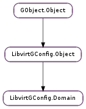

| static | new() |
| static | new_from_xml(xml) |
| static | source_pty_set_path(pty, path) |
| add_device(device) | |
| get_cpu() | |
| get_current_memory() | |
| get_custom_xml(ns_uri) | |
| get_description() | |
| get_devices() | |
| get_features() | |
| get_memory() | |
| get_name() | |
| get_os() | |
| get_title() | |
| get_vcpus() | |
| get_virt_type() | |
| set_clock(klock) | |
| set_cpu(cpu) | |
| set_current_memory(memory) | |
| set_custom_xml(xml, ns, ns_uri) | |
| set_description(description) | |
| set_devices(devices) | |
| set_features(features) | |
| set_lifecycle(event, action) | |
| set_memory(memory) | |
| set_name(name) | |
| set_os(os) | |
| set_power_management(pm) | |
| set_seclabel(seclabel) | |
| set_title(title) | |
| set_vcpus(vcpu_count) | |
| set_virt_type(type) |
| Name | Type | Flags | Description |
|---|---|---|---|
| current-memory | int | r/w | Current Guest Memory (in kilobytes) |
| description | str | r/w | Some human readable description (could be anything). |
| features | list | r/w | Hypervisor Features |
| memory | int | r/w | Maximum Guest Memory (in kilobytes) |
| name | str | r/w | Domain Name |
| title | str | r/w | A short description - title - of the domain |
| vcpu | int | r/w | Maximum Number of Guest Virtual CPUs |
None
| Name | Type | Access |
|---|---|---|
| parent | LibvirtGConfig.Object | r |
Bases: LibvirtGConfig.Object
| Return type: | LibvirtGConfig.Domain |
|---|
| Parameters: | xml (str) – |
|---|---|
| Raises: | GLib.GError |
| Return type: | LibvirtGConfig.Domain |
| Parameters: |
|
|---|
| Parameters: | device (LibvirtGConfig.DomainDevice) – |
|---|
| Returns: | A LibvirtGConfig.DomainCpu. The returned object should be unreffed with GObject.Object.unref () when no longer needed. |
|---|---|
| Return type: | LibvirtGConfig.DomainCpu |
Gets the CPU configuration of domain
| Returns: | current amount of RAM in kilobytes (i.e. blocks of 1024 bytes). |
|---|---|
| Return type: | int |
| Returns: | a newly allocated GLib.List of LibvirtGConfig.DomainDevice. |
|---|---|
| Return type: | [LibvirtGConfig.DomainDevice] |
Gets the list of devices attached to domain. The returned list should be freed with GLib.List.free (), after its elements have been unreffed with GObject.Object.unref ().
| Returns: | The returned list should be freed with GLib.strfreev () when no longer needed. |
|---|---|
| Return type: | [str] |
| Returns: | maximum amount of RAM in kilobytes (i.e. blocks of 1024 bytes). |
|---|---|
| Return type: | int |
| Returns: | A LibvirtGConfig.DomainOs. The returned object should be unreffed with GObject.Object.unref () when no longer needed. |
|---|---|
| Return type: | LibvirtGConfig.DomainOs |
Gets the operating system configuration of domain
| Return type: | LibvirtGConfig.DomainVirtType |
|---|
| Parameters: | klock (LibvirtGConfig.DomainClock or None) – |
|---|
| Parameters: | cpu (LibvirtGConfig.DomainCpu or None) – |
|---|
| Parameters: | memory (int) – The current amount of RAM in kilobytes. |
|---|
Sets the current amount of RAM allocated to domain in kilobytes (i.e. blocks of 1024 bytes). This can be set to less than the maximum domain memory to allow to balloon the guest memory on the fly. Be aware that libvirt will set it automatically if it’s not explictly set, which means you may need to set this value in addition to ‘memory’ if you want to change the available domain memory after creation.
| Parameters: | |
|---|---|
| Raises: | |
| Return type: |
| Parameters: | devices ([LibvirtGConfig.DomainDevice]) – |
|---|
| Parameters: |
|
|---|
| Parameters: | memory (int) – The maximum amount of RAM in kilobytes. |
|---|
Sets the maximum amount of RAM allocated to domain in kilobytes (i.e. blocks of 1024 bytes).
| Parameters: | os (LibvirtGConfig.DomainOs or None) – the os configuration to set |
|---|
| Parameters: | pm (LibvirtGConfig.DomainPowerManagement or None) – a #GVirPowerManagement instance |
|---|
| Parameters: | seclabel (LibvirtGConfig.DomainSeclabel or None) – the security label configuration to set |
|---|
| Parameters: | title (str or None) – title of the domain |
|---|
Sets the title of the domain. This is an optional short textual description of the domain. Passing a None title unsets the current domain title.
| Parameters: | type (LibvirtGConfig.DomainVirtType) – |
|---|